Kimino, Wakayama: things to do, food and stays
Kimino · Wakayama
Kimino
Highlighted on the Wakayama map.
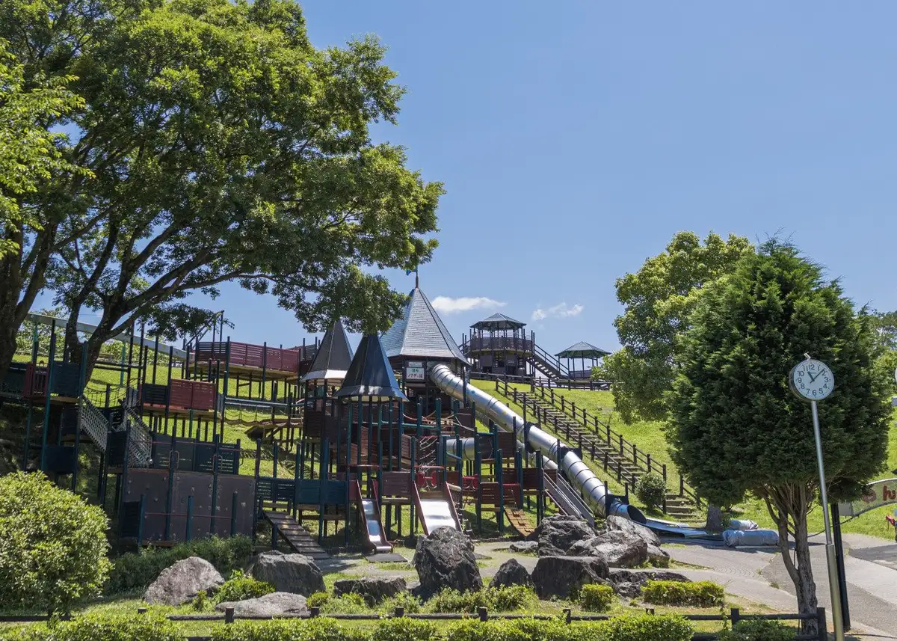
Stay
星の動物園バンガロー
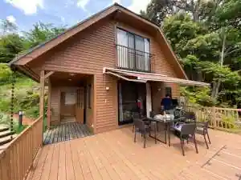
Hoshi No Dobutsuen Bangaro
美里の湯 かじか荘
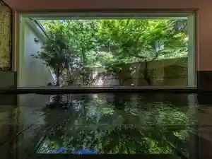
Misato No Yu Kajika So
Dining
ステラート
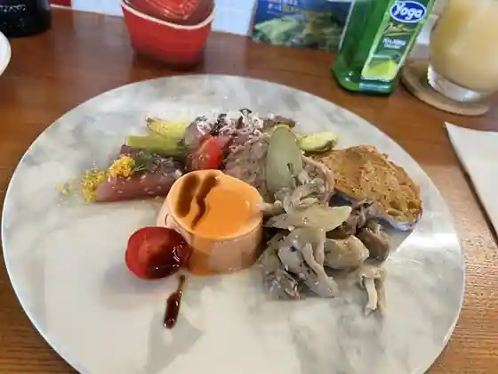
Suterato
chez みなみ
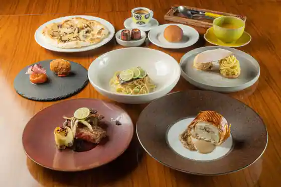
chez Minami
ドーシェル
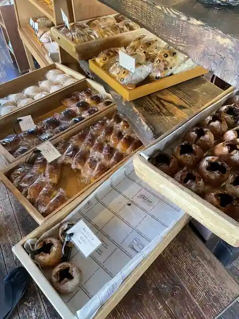
Doshieru
キミノーカ
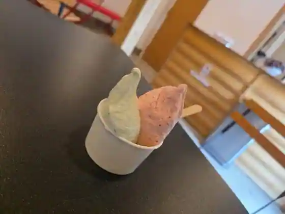
Kiminoka
もみのき食堂
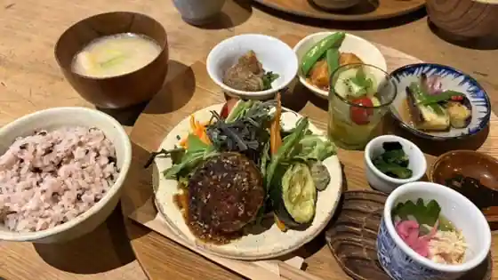
Mominoki Shokudo
Ponte Luce
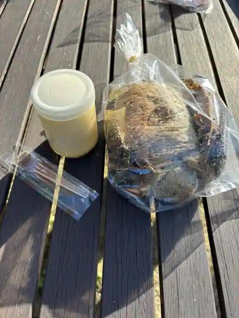
Ponte Luce
森のぱん屋さん
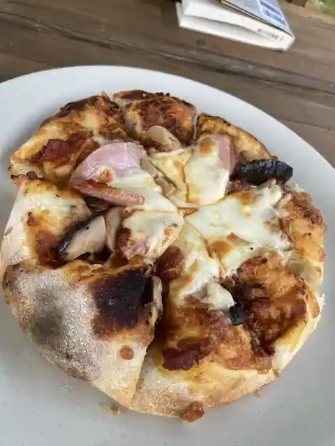
Mori Nopan Ya San
きこりのピザ屋 ソマウド
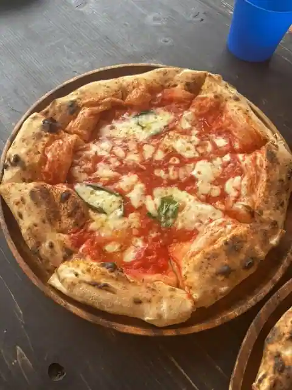
Kikorino Pizza Ya Somaudo
リーブス オブ グラス 紀美野
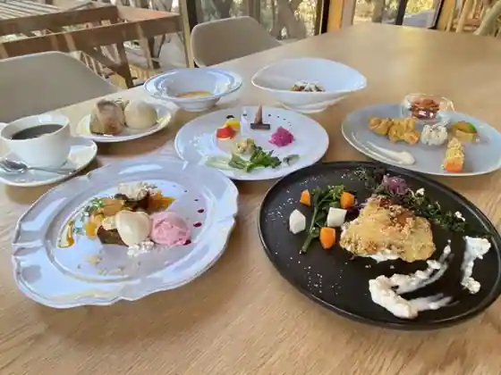
Ribusu Obu Gurasu Kimino
くらとくり
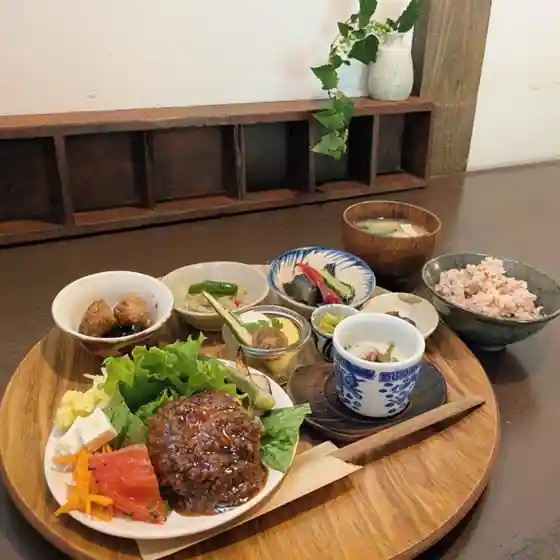
Kuratokuri
薪焼き石窯パン 岳人
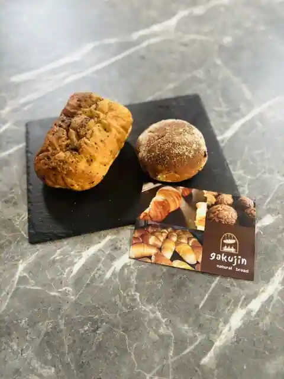
Takigi Yaki Ishigama Bakery Gakujin
レッド カフェ ファクトリー
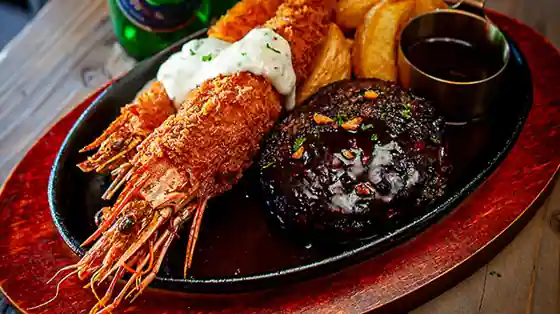
Reddo Cafe Fakutori
山の家おいし
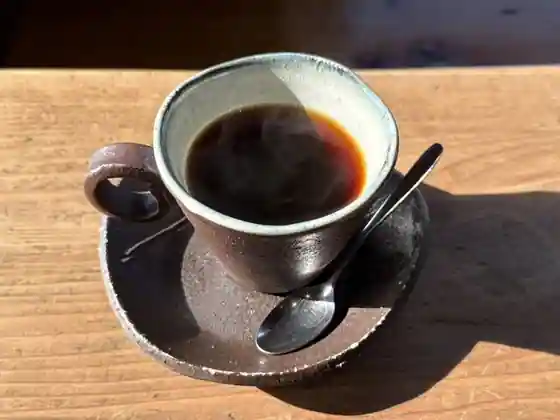
Yama No Ie Oishi
蕎麦カフェ あんのん
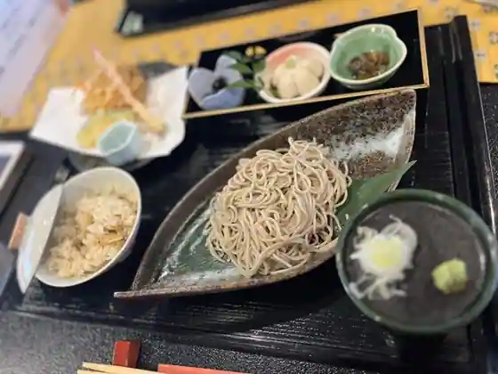
Soba Cafe Annon
キッチン こもれび
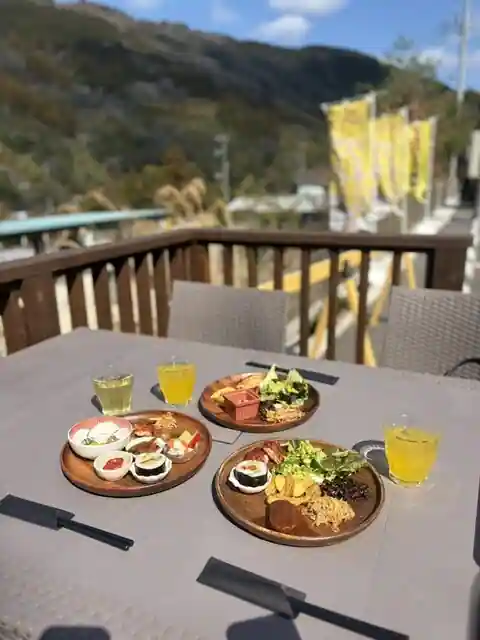
Kitchen Komorebi
ティーグレース
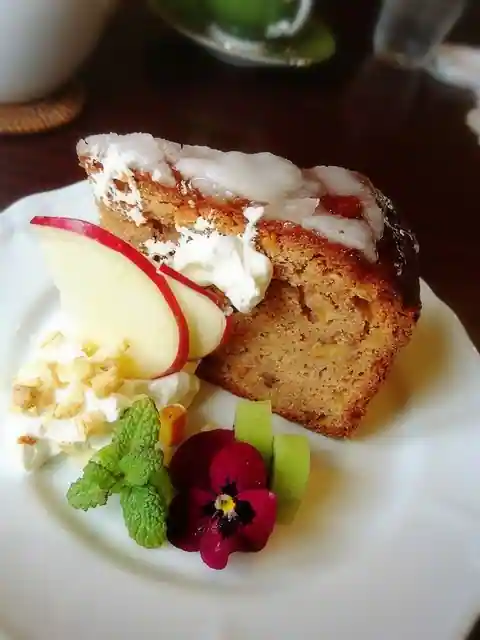
Teiguresu
369
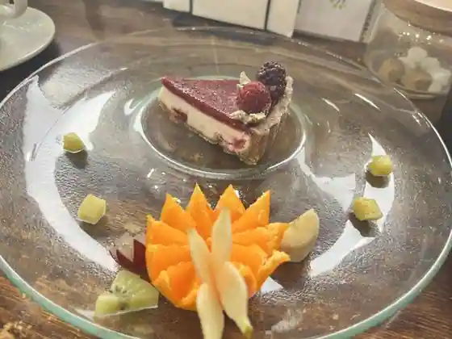
369
ヤドリギ
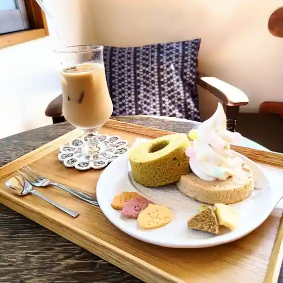
Yadorigi
ハチラボ
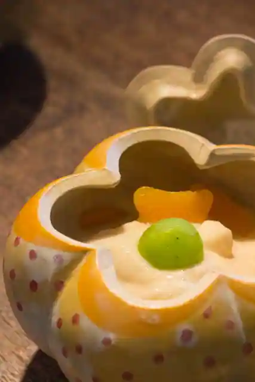
Hachirabo
かじか荘
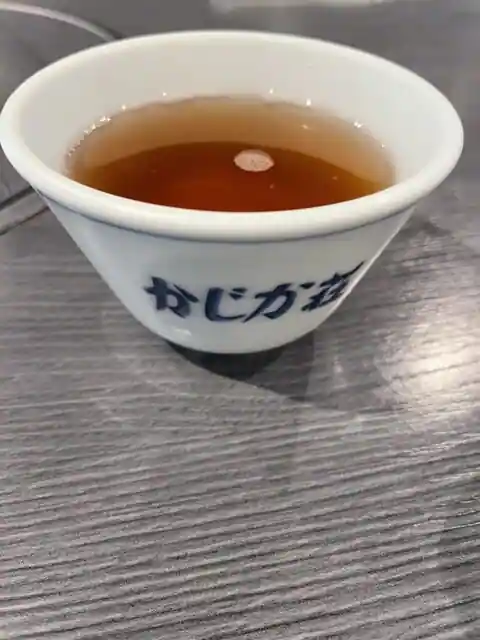
Kajika So
中華そば 兎
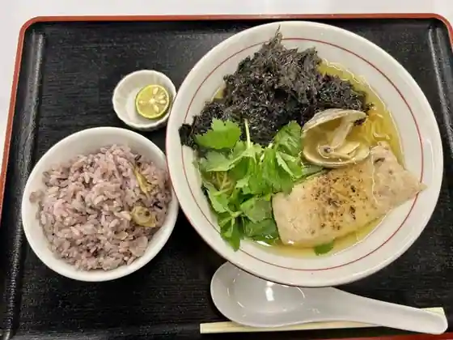
Chuka Soba Usagi
エムシーカフェミッチーズ
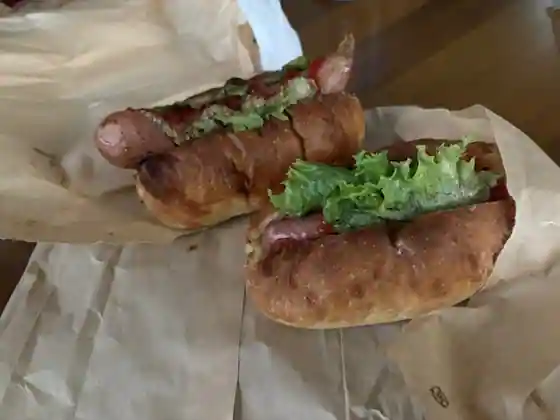
Emushi Cafe Mitchizu
雨山の郷
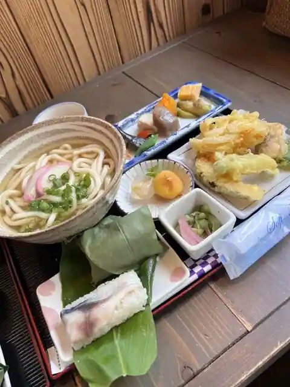
Uzan No Sato
Sights
Shoseki Highlands
Misato Tenmondai
Kimino no Kamifureai Park